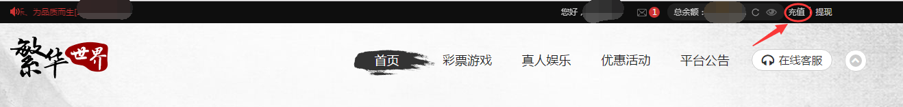
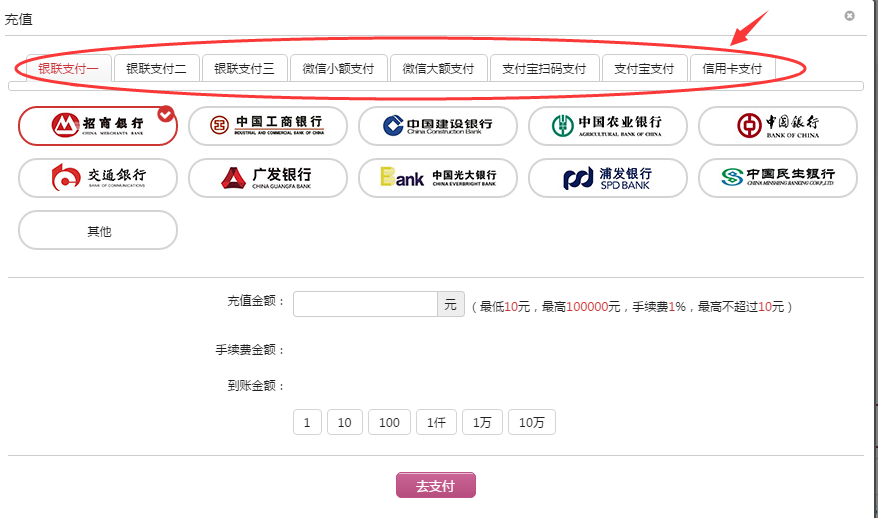
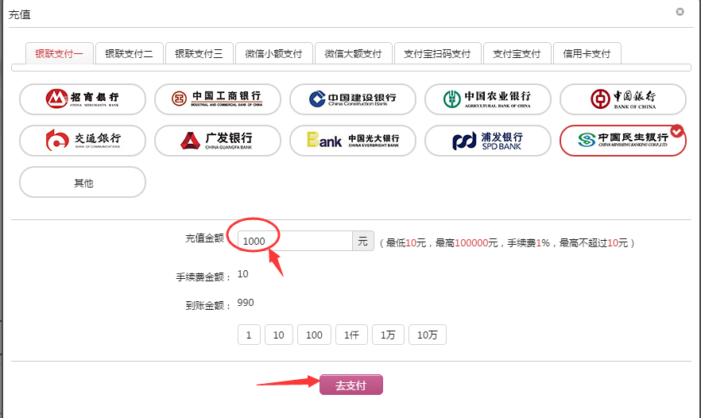
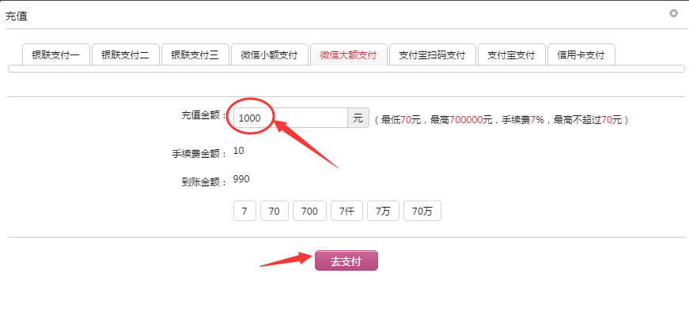

1、将鼠标指向导航栏的“充值”，点击进去。

2、进入充值页面后，您有以下充值渠道可以选择：银联支付（三条线路）、微信小额支付、微信大额支付、支付宝扫码支付、支付宝支付和信用卡支付。

3、 如您选择网银充值，则选择您想要支付的银行名称，比如“民生银行”，然后填好充值金额，点击“去支付”

4、页面即跳转至相应银行的支付接口，请根据页面提示填写完信息，即可完成充值。
1、 将鼠标指向导航栏的“充值”，点击进去。
2、进入充值页面后，选择“微信小额支付”或“微信大额支付”，输入充值金额，点击“去支付”。

3、页面跳转，出现一个二维码图片，拿出您的手机扫一扫二维码即可完成微信充值。
1、将鼠标指向导航栏的“账户余额”处，会自动下拉出“在线充值”和“在线提现”两个子菜单，点击“在线提现”。
2、在提现页面，输入需要提现的金额、资金密码和安全问题的答案，点击“申请提现”。
3、页面提示“提现成功”。
4、如果您想查询提现是否到账，请在导航栏里找到“历史记录”，选择子菜单中的“提现记录”，点击进去
5、在提现记录页面里，您可以看到每一笔提现的历史记录，通过查看表格最右边的“备注”栏里的内容，您可以查看到提现是否已经处理好。如果您有任何疑问，可以联系在线客服处理。